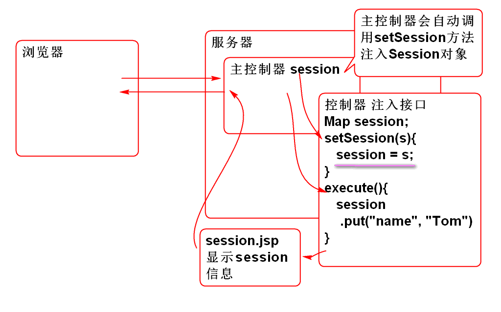
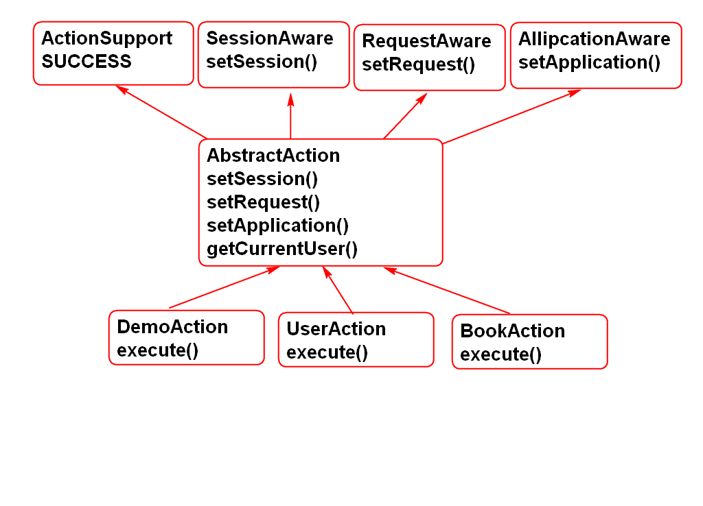
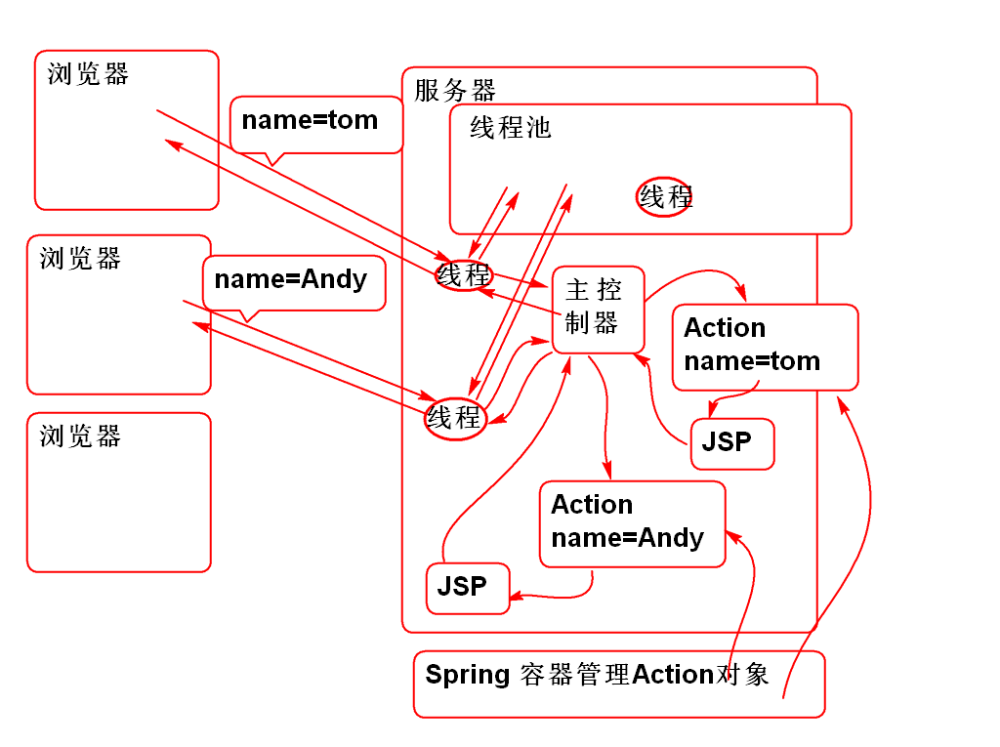
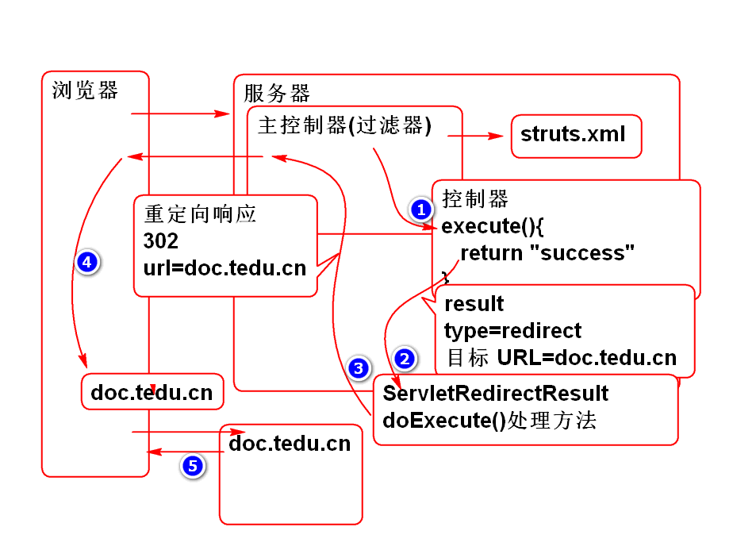
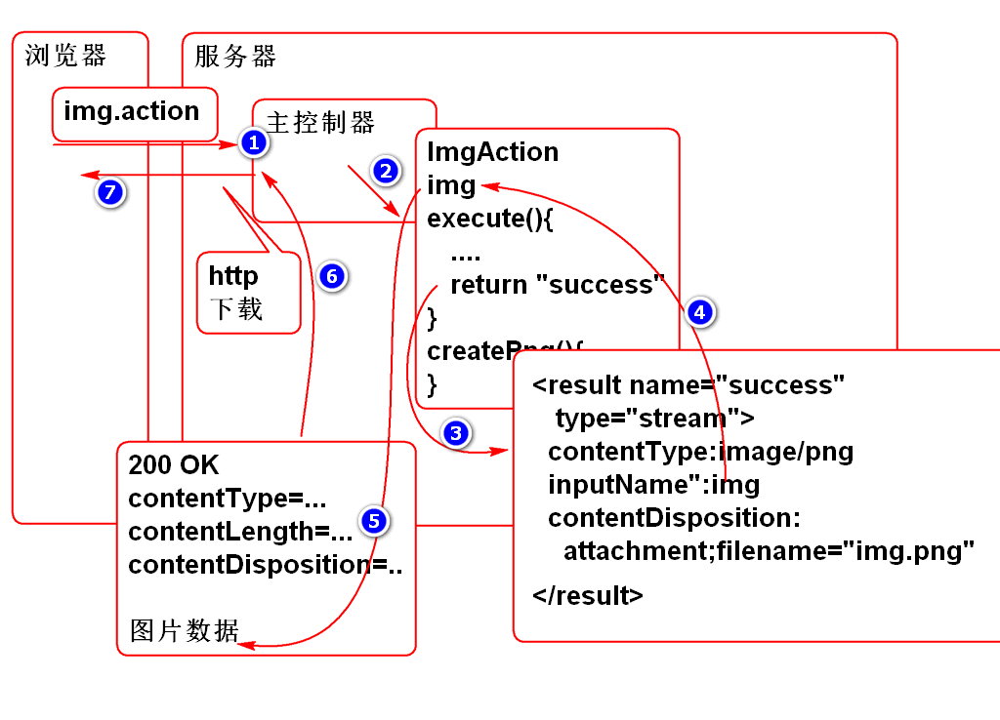
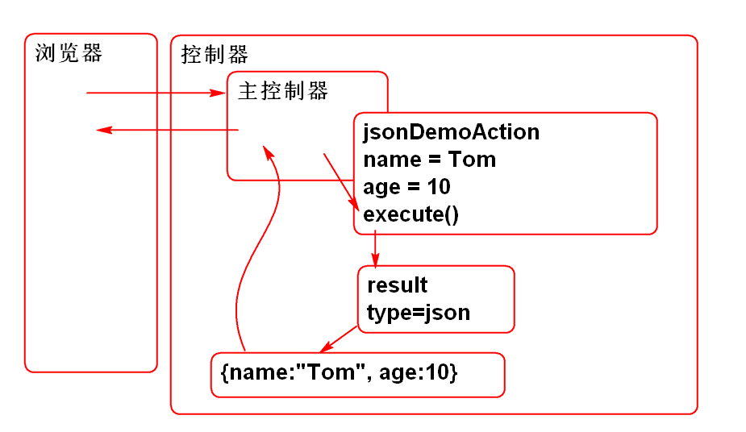

Struts 2 的控制器只要实现 SessionAware接口, 实现其Bean属性注入方法 setSession, Struts 2 主控制器就会在执行控制器方法之前将Session对象注入到控制器中.
原理:

案例:
声明控制器, 实现SessionAware接口:
/**
* 自动注入Session对象.
* Struts主控制器在发现控制器类, SessionController
* 实现了SessionAware时候, 会自动的将Session对象
* 注入到 控制器对象中. 注入时候调用的方法是setSession
*/
public class SessionAction
implements SessionAware{
private Map<String, Object> session;
public void setSession(
Map<String, Object> session) {
this.session=session;
}
public String demo(){
session.put("name", "Tom");
return "success";
}
}
编写success.jsp测试, session中存储的数据:
<%@ page language="java"
contentType="text/html; charset=UTF-8"
pageEncoding="UTF-8"%>
<!DOCTYPE html>
<html>
<head>
<meta charset="UTF-8">
<title>Session Demo</title>
</head>
<body>
<h1>Session</h1>
<p>session数据: ${name}</p>
</body>
</html>
编辑配置文件, struts.xml
<action name="session"
class="cn.tedu.controller.SessionAction"
method="demo">
<result name="success">
/WEB-INF/jsp/session.jsp
</result>
</action>
测试
http://localhost:8080/ssh2/demo/session.action
为了重用SessionAware注入代码, 简化控制器编写, 在实际工作中经常抽取AbstractAction, 封装控制器的公共代码, 简化控制器的开发.
Struts 2 也提供了一个 ActionSupport 类, 建议作为Action的父类, 其作用也是封装了 Action常用功能, 简化Action的开发.

案例:
public abstract class AbstractAction
extends ActionSupport
implements SessionAware {
protected Map<String, Object> session;
public void setSession(
Map<String, Object> session) {
this.session=session;
}
}
Struts2 还提供了 RequestAware 和 ApplicationAware, 用于注入 request和application, 为了方便控制器的编程, 可以将这些接口在AbstractAction上实现:
public abstract class AbstractAction
extends ActionSupport
implements SessionAware,
RequestAware,
ApplicationAware{
protected Map<String, Object> request;
protected Map<String, Object> session;
protected Map<String, Object> application;
public void setSession(
Map<String, Object> session) {
this.session=session;
}
public void setRequest(
Map<String, Object> request) {
this.request=request;
}
public void setApplication(
Map<String, Object> application) {
this.application=application;
}
}
这样控制器可以简化为:
public class DemoAction extends AbstractAction{
public String execute(){
request.put("myName", "Wang");
session.put("name", "Andy");
application.put("test", "熊大");
return SUCCESS;
}
}
配置控制器:
<action name="demo"
class="cn.tedu.controller.DemoAction">
<result name="success">
/WEB-INF/jsp/session.jsp
</result>
</action>
session.jsp
<%@ page language="java"
contentType="text/html; charset=UTF-8"
pageEncoding="UTF-8"%>
<!DOCTYPE html>
<html>
<head>
<meta charset="UTF-8">
<title>Session Demo</title>
</head>
<body>
<h1>Session</h1>
<p>request数据: ${myName}</p>
<p>session数据: ${name}</p>
<p>application数据: ${test}</p>
</body>
</html>
可以体会到在控制器中访问 session request 和 application的便捷性.
Struts 2 为了保护控制器的线程安全, 每个用户请求创建一个新的 控制器(Action)对象.
原理:

Spring 将接管 Struts 2 控制器对象的管理, 帮助创建 Struts 2 控制器Bean对象.
整合步骤:
导入包 Struts 2 提供的整合包
<dependency>
<groupId>org.apache.struts</groupId>
<artifactId>struts2-spring-plugin</artifactId>
<version>2.3.8</version>
</dependency>
导入以后, 无需配置, 自动工作!
导入Spring包, 和配置Spring容器.
Spring 包已经自动依赖, 无需再次导入
<listener>
<listener-class>org.springframework.web.context.ContextLoaderListener</listener-class>
</listener>
<context-param>
<param-name>contextConfigLocation</param-name>
<param-value>classpath:spring-*.xml</param-value>
</context-param>
其中 ContextLoaderListener 类要求配置参数 contextConfigLocation
添加Spring配置文件 spring-web.xml
<?xml version="1.0" encoding="UTF-8"?>
<beans xmlns="http://www.springframework.org/schema/beans"
xmlns:xsi="http://www.w3.org/2001/XMLSchema-instance"
xmlns:context="http://www.springframework.org/schema/context"
xmlns:jdbc="http://www.springframework.org/schema/jdbc"
xmlns:jee="http://www.springframework.org/schema/jee"
xmlns:tx="http://www.springframework.org/schema/tx"
xmlns:aop="http://www.springframework.org/schema/aop"
xmlns:mvc="http://www.springframework.org/schema/mvc"
xmlns:util="http://www.springframework.org/schema/util"
xmlns:jpa="http://www.springframework.org/schema/data/jpa"
xsi:schemaLocation="
http://www.springframework.org/schema/beans http://www.springframework.org/schema/beans/spring-beans-3.0.xsd
http://www.springframework.org/schema/context http://www.springframework.org/schema/context/spring-context-3.0.xsd
http://www.springframework.org/schema/jdbc http://www.springframework.org/schema/jdbc/spring-jdbc-3.0.xsd
http://www.springframework.org/schema/jee http://www.springframework.org/schema/jee/spring-jee-3.0.xsd
http://www.springframework.org/schema/tx http://www.springframework.org/schema/tx/spring-tx-3.0.xsd
http://www.springframework.org/schema/data/jpa http://www.springframework.org/schema/data/jpa/spring-jpa-1.3.xsd
http://www.springframework.org/schema/aop http://www.springframework.org/schema/aop/spring-aop-3.0.xsd
http://www.springframework.org/schema/mvc http://www.springframework.org/schema/mvc/spring-mvc-3.0.xsd
http://www.springframework.org/schema/util http://www.springframework.org/schema/util/spring-util-3.0.xsd">
</beans>
当前Spring版本是3.0版本, 配置文件中的Schema文件版本也要改成3.0版本的! 否则无法使用.
部署到容器进行测试...
利用Spring 管理 控制器Bean组件, 注意这些bean不能是单例的, 否则有线程安全问题!!
@Controller
@Scope("prototype")
public class HelloAction extends AbstractAction {
public String execute(){
System.out.println("Hello World!");
return SUCCESS;
}
}
在spring 配置文件中配置组件扫描功能 spring-web.xml
<context:component-scan base-package="cn.tedu.controller"/>
在Struts2 配置文件中, class 属性替换为 Spring Bean ID 即可使用Spring 创建的Bean组件了.
<!-- 利用Spring作为控制器Action的容器
只需要使用class="Bean ID"-->
<action name="hello"
class="helloAction">
<result type="dispatcher" name="success">
/WEB-INF/jsp/ok.jsp
</result>
</action>
Struts 提供了丰富的Result支持, 在struts的默认配置文件struts-default.xml中声明了这些result:
<package name="struts-default" abstract="true">
<result-types>
<result-type name="chain" class="com.opensymphony.xwork2.ActionChainResult"/>
<result-type name="dispatcher" class="org.apache.struts2.dispatcher.ServletDispatcherResult" default="true"/>
<result-type name="freemarker" class="org.apache.struts2.views.freemarker.FreemarkerResult"/>
<result-type name="httpheader" class="org.apache.struts2.dispatcher.HttpHeaderResult"/>
<result-type name="redirect" class="org.apache.struts2.dispatcher.ServletRedirectResult"/>
<result-type name="redirectAction" class="org.apache.struts2.dispatcher.ServletActionRedirectResult"/>
<result-type name="stream" class="org.apache.struts2.dispatcher.StreamResult"/>
<result-type name="velocity" class="org.apache.struts2.dispatcher.VelocityResult"/>
<result-type name="xslt" class="org.apache.struts2.views.xslt.XSLTResult"/>
<result-type name="plainText" class="org.apache.struts2.dispatcher.PlainTextResult" />
</result-types>
...
> 可以看到在struts-default包中定义了这些Result类型, 只要继承struts-default既可以继承这些Result类型.
> 每个Result类型对应一个类, Result类型的具体功能是由这个类提供算法支持. 如: dispatcher 类型的功能, 由 org.apache.struts2.dispatcher.ServletDispatcherResult 类来处理.
> 这个配置也说明: 如果在使用Struts2时候, 对其提供的Result类型不满意, 可以自行添加类进行扩展, 扩展出自己的Result类型.
常用的类型有:
dispatcher 类型是默认的结果类型, 其处理规则是将控制器转发到目标JSP.
案例:
<action name="demo"
class="cn.tedu.controller.DemoAction">
<result name="success">
/WEB-INF/jsp/session.jsp
</result>
</action>
就是重定向, 控制器处理以后, 重定向到其他URL目标:

案例:
编写控制器
@Controller
@Scope("prototype")
public class RedirectDemoAction
extends AbstractAction{
public String execute() {
System.out.println("重定向请求");
return SUCCESS;
}
}
配置 struts.xml
<!-- 重定向演示 -->
<action name="doc"
class="redirectDemoAction">
<result type="redirect" name="success">
<param name="location">
http://doc.tedu.cn
</param>
</result>
</action>
测试:
http://localhost:8080/ssh2/demo/doc.action
与 redirect 类型, 只是重定向的目标不是url而是 action
案例:
编写控制器类
@Controller
@Scope("prototype")
public class RedirectActionDemoAction
extends AbstractAction{
public String execute(){
System.out.println("重定向到其他控制器");
return SUCCESS;
}
}
配置 struts.xml
<!-- 重定向到其他的控制器 -->
<action name="redirect"
class="redirectActionDemoAction">
<result type="redirectAction"
name="success">
<param name="actionName">hello</param>
<param name="namespace">/demo</param>
</result>
</action>
测试:
http://localhost:8080/ssh2/demo/redirect.action
stream 可以用于HTTP下载 文件:

将一个图片显示发送到客户端:
编写控制器:
@Controller
@Scope("prototype")
public class ImgAction extends AbstractAction {
private InputStream img;
public InputStream getImg() {
return img;
}
public void setImg(InputStream img) {
this.img = img;
}
private byte[] createPng() throws IOException{
BufferedImage img = new BufferedImage(200, 60, BufferedImage.TYPE_3BYTE_BGR);
Random r = new Random();
for(int i=0; i<100; i++){
int x = r.nextInt(img.getWidth());
int y = r.nextInt(img.getHeight());
int rgb=r.nextInt(0xffffff);
img.setRGB(x, y, rgb);
}
ByteArrayOutputStream out =
new ByteArrayOutputStream();
ImageIO.write(img, "png", out);
out.close();
return out.toByteArray();
}
public String execute() throws IOException{
byte[] png=createPng();
img = new ByteArrayInputStream(png);
return SUCCESS;
}
}
配置 struts.xml
<!-- 将图片发送到浏览器 -->
<action name="img"
class="imgAction">
<result name="success" type="stream">
<param name="inputName">img</param>
<param name="contentType">image/png</param>
</result>
</action>
注意: img 是控制器ImgAction的bean属性, 其类型必须是inputStream
测试:
http://localhost:8080/ssh2/demo/img.action
将图片下载到浏览器:
控制器, 重用ImgAction
配置struts.xml
<!-- 浏览器端自动下载图片 -->
<action name="download"
class="imgAction">
<result name="success" type="stream">
<param name="inputName">img</param>
<param name="contentType">
application/octet-stream
</param>
<param name="contentDisposition">
attachment; filename="demo.png"
</param>
</result>
</action>
根据Http协议, 设置contentType 和 contentDisposition, HTTP协议具体内容请参考RFC2616.
测试
http://localhost:8080/ssh2/demo/download.action
下载Excel文件:
导入POI API
<dependency>
<groupId>org.apache.poi</groupId>
<artifactId>poi</artifactId>
<version>3.13</version>
</dependency>
编写控制器
@Controller
@Scope("prototype")
public class ExcelAction extends AbstractAction {
private InputStream excel;
public InputStream getExcel() {
return excel;
}
public void setExcel(InputStream excel) {
this.excel = excel;
}
private byte[] createExcel()
throws IOException{
//创建工作簿
HSSFWorkbook workbook=new HSSFWorkbook();
//创建工作表
HSSFSheet sheet=
workbook.createSheet("Demo");
//在工作表中创建数据行
HSSFRow row = sheet.createRow(0);
//创建行中的格子
HSSFCell cell = row.createCell(0);
cell.setCellValue("Hello World!");
//将Excel文件保存为 byte 数组
ByteArrayOutputStream out =
new ByteArrayOutputStream();
workbook.write(out);
out.close();
return out.toByteArray();
}
public String execute() throws IOException{
byte[] buf = createExcel();
excel = new ByteArrayInputStream(buf);
return SUCCESS;
}
}
配置 struts.xml
<!-- 浏览器端自动下载Excel -->
<action name="excel"
class="excelAction">
<result name="success" type="stream">
<param name="inputName">excel</param>
<param name="contentType">
application/octet-stream
</param>
<param name="contentDisposition">
attachment; filename="demo.xls"
</param>
</result>
</action>
测试
http://localhost:8080/ssh2/demo/excel.action
json Result 不是Struts2 内嵌结果类型, 需要导入 struts2-json-plugin:
<dependency>
<groupId>org.apache.struts</groupId>
<artifactId>struts2-json-plugin</artifactId>
<version>2.3.8</version>
</dependency>
在 struts2-json-plugin-2.3.8.jar 包中的struts-plugin.xml文件中声明了 json类型的result:
<package name="json-default" extends="struts-default">
<result-types>
<result-type name="json" class="org.apache.struts2.json.JSONResult"/>
</result-types>
...
使用时候需要将 package 继承于 json-default 就可以使用 json Result, 由于json-default继承于struts-default, 这样也可以使用struts-default中定义的result了.
Json Result 原理:

使用Json Result
编写控制器
@Controller
@Scope("prototype")
//转换为json: {name:"Tom", age:10}
public class JsonDemoAction {
private String name;
private int age;
public String getName() {
return name;
}
public void setName(String name) {
this.name = name;
}
public int getAge() {
return age;
}
public void setAge(int age) {
this.age = age;
}
public String execute(){
name = "Tom";
age = 10;
return "success";
}
}
配置:
<package name="json" namespace="/json"
extends="json-default">
<action name="jsonDemo"
class="jsonDemoAction">
<result name="success" type="json">
</result>
</action>
</package>
测试
http://localhost:8080/ssh2/json/jsonDemo.action
将jsonDemoAction的整体作为Java Bean 转换为json字符串发送到浏览器 jsonDemoAction中的Bean属性会转换为 json字符串中的属性
以上案例问题是不能精确控制器哪些Bean属性转换为json字符串, 所以一般将指定属性转换为JSON
编写控制器:
@Controller
@Scope("prototype")
public class RootDemoAction extends AbstractAction{
private Object jsonResult;
public void setJsonResult(Object jsonResult) {
this.jsonResult = jsonResult;
}
public Object getJsonResult() {
return jsonResult;
}
public String execute(){
String[] ary={"Tom", "Andy"};
jsonResult = ary;
return SUCCESS;
}
}
配置:
<!-- 指定Action中的一个Bean属性, 转换为
json字符串, 发送到客户端, jsonResult
是Action中的Bean属性名 -->
<action name="rootDemo"
class="rootDemoAction">
<result name="success" type="json">
<param name="root">jsonResult</param>
</result>
</action>
测试:
http://localhost:8080/ssh2/json/rootDemo.action